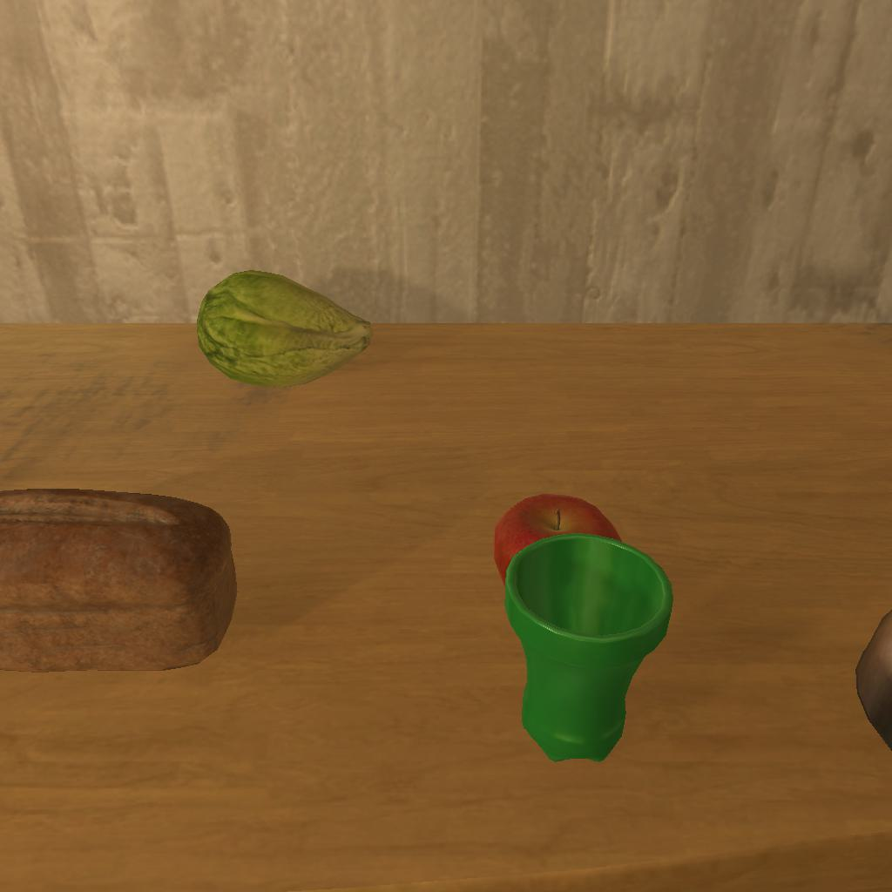

---------------------------------------------------------task: 26---------------------------------------------------------
--------------------------------------------------------------------------------------------------------------------------------------------------------------------
--------------------------------------------------------------------------------------------------------------------------------------------------------------------
Step:--------------------------------------------------------------------------15-------------------------------------------------------------------------------
----------------------------------------
VLM Prompt:
Image1:
Image2:
Image3:
**Instruction**
1. Analyze the provided images to identify all visible household objects and compare the difference between images (e.h. whether the object is opened or not and taken on hand or not), focusing on those relevant to the task description "find two kettle and put them in cabinet."
2. Use the analysis of images and the task hint "The agent must find an object of the desired type, pick it up, find the correct location to place it, put it down there, then look for another object of the desired type, pick it up, return to previous location, and put it down there with the other object." to answer the question: what is the most reasonable action in the choices for the task description "find two kettle and put them in cabinet"?
3. Decide and write the answer using the template: The answer is: (i): , where i is the real number. If there is no desired object in images, search every place based on **Initial Observation** to find the object. And if no one is exactly correct, choose a similar answer.
**Initial Observation**
You are in the middle of a room. Looking quickly around you, you can see countertop (1), coffeemachine (1), cabinet (1-4), drawer (1-8), sink (1), sinkbasin (1), garbagecan (1), fridge (1), microwave (1), dresser (1), sidetable (1)
**Answer Choices**
(1): go to coffeemachine 1
(2): go to cabinet 1
(3): go to cabinet 2
(4): go to drawer 1
(5): go to sink 1
(6): go to sinkbasin 1
(7): go to cabinet 3
(8): go to garbagecan 1
(9): go to cabinet 4
(10): go to drawer 2
(11): go to fridge 1
(12): go to microwave 1
(13): go to dresser 1
(14): go to sidetable 1
(15): go to drawer 3
(16): go to drawer 4
(17): go to drawer 5
(18): go to drawer 6
(19): go to drawer 7
(20): go to drawer 8
(21): put kettle 1 in/on countertop 1
(22): examine kettle 1
(23): examine countertop 1
**Answer**
Let's think step by step by following the instructions.
----------------------------------------
----------------------------------------
Original Response:
First, we analyze the provided images. Image1 and Image2 seem to be the same, with no visible changes. In both images, we can see a loaf of bread, a green cup, and a red apple on a countertop. There are no kettles visible in these images. Image3 introduces a new object, which is a silver kettle with a blue handle on the countertop.
With the task description in mind, "find two kettles and put them in the cabinet," we must find another kettle since we have already identified one in Image3. The initial observation mentions various locations where we can search for household objects, including cabinets, drawers, and appliances.
Based on the task hint, we need to pick up the kettle we have found and then search for the second kettle. Once we have both kettles, we must put them in the cabinet. Since we have already found one kettle in Image3, the next reasonable action would be to pick it up.
However, none of the answer choices explicitly mention picking up the kettle from the countertop. The closest action related to the kettle is to examine it, which could imply checking it before picking it up. Since no other action directly aligns with picking up the kettle, we will choose the action to examine the kettle, which could be the precursor to picking it up.
The answer is: (22): examine kettle 1.
----------------------------------------
----------------------------------------
>>> Refine Original VLM Response and Get Pure Action: examine kettle 1
----------------------------------------
-----------------------------------------------------------------
Running time: 12.388460397720337 seconds
Total Money: 16.609469999999995
-----------------------------------------------------------------
-----------------------------------------------------------------
Text Observation:This is a normal kettle 1
-----------------------------------------------------------------
UNSUCCEED